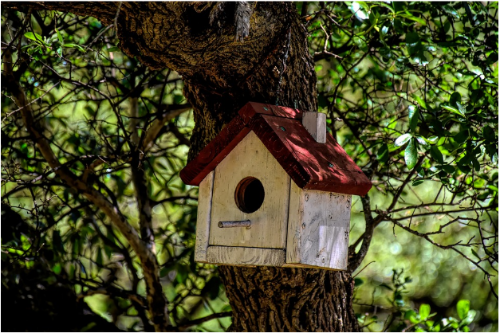
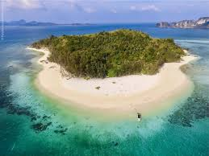
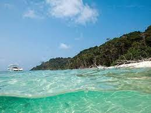
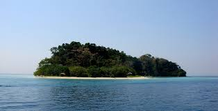

| Arial Island Wildlife Sanctuary |
Arial Island Wildlife Sanctuary, located in Nayagarh, is the perfect example of nature’s bounty with great scenic beauty and rich biodiversity. |
 |
| Bamboo Island Wildlife Sanctuary |
Bamboo Islands Wildlife Sanctuary, located in Sihanoukville is the perfect example of nature’s bounty with great scenic beauty and rich biodiversity. |
 |
| Island Wildlife Sanctuary |
Located in the middle of the Andaman Sea between the Andaman and Nicobar Islands group on the southeastern coast of India, the Belle Island connects captivating natural beauty with a fascinating wildlife sanctuary of exotic wildlife. |
|
| Benett Island Wildlife Sanctuary |
Bennett Island has the largest permanent ice cover within the De Long Islands. In 1987, the permanent ice cap of this island consisted of four separate glaciers that had a total area of 65.87 square kilometres (25.43 sq mi). All of these glaciers were perched on high, basaltic plateaus bounded by steep scarp-like slopes. |
 |
| Island Wildlife Sanctuary |
Seventy years ago, herons, egrets, and pelicans nesting on several small islands in Lake Worth Lagoon led the Audubon Society to designate the islands as bird sanctuaries. The Bingham, Bolton, and Blossom families leased the islands to Audubon. |
 |